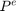
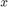
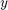
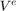
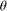
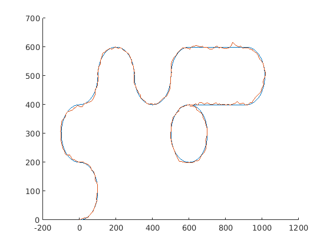

Contents
FILTRO DE KALMAN
Con el objetivo de usar el filtro de Kalman que relaciona las variables de estado en forma lineal, se consideró un primer modelo del sistema como el siguiente: las variables de estado son la posición  del vehículo con respecto a las coordenadas terrestres , , la velocidad  del vehículo con respecto a las mismas coordenadas y el conjunto de variables:
$$ \begin{align} c_{11} &= \cos(\theta) c_{21} &= -\sin(\theta) c_{12} &= \sin(\theta) c_{22} &= \cos(\theta) \end{align} $$
Error updating Text.
String must have valid interpreter syntax:
$$ \begin{align} c_{11} &= \cos(\theta) c_{21} &= -\sin(\theta) c_{12} &= \sin(\theta) c_{22} &= \cos(\theta) \end{align} $$
donde  es la orientación del vehículo. De esta forma, la dinámica del sistema puede describirse mediante el siguiente conjunto de ecuaciones:
(poner ecuaciones)
clear;
close all;
Ejercicio 2:
Se mide la posición y la velocidad con el radar, y se quiere estimar la posición, velocidad y orientación del vehículo. Para verificar la estimación se tienen Preal, Vreal y Theta.
load('Acel.mat'); % Me devuelve Acel, muestreada a 100Hz load('Gyro.mat'); % Me devuelve Gyro, muestreada a 100Hz load('Radar.mat'); % Me devuelve Pradar y Vradar, muestreadas a 1Hz load('trayectoria.mat'); % Me devuelve Preal, Vreal y Theta, muestreadas a 100Hz % Se submuestrea la aceleración y la velocidad angular a 1Hz. Ts = 1; Abx = Acel(1:100:end,2); % Aceleración en x, en coordenadas no inerciales, submuestreada a 1Hz Aby = Acel(1:100:end,3); % Aceleración en y, en coordenadas no inerciales, submuestreada a 1Hz w = Gyro(1:100:end,2); % Velocidad angular en z, en coordenadas no inerciales, submuestreada a 1Hz % Matrices para ecuaciones del sistema: I = eye(2); O = zeros(2); % A = f(tk) = depende del tiempo (se define en las ecuaciones de Riccati) B = [I O O O; O I O O; O O I O; O O O I]; Q = [I O O O; O I O O; O O I O; O O O I]; % Ruido del proceso C = [I O O O; O I O O]; % Se mide posición y velocidad con el radar. sp = 10; sv = .1; R = [sp*I O; O sv*I]; y = [Pradar(:,2)'; Pradar(:,3)'; Vradar(:,2)'; Vradar(:,3)']; % Ecuaciones de Riccati: n = length(Abx)-1; % cantidad de muestras del proceso % Condiciones iniciales: xhat = zeros(length(B),n); deltaP = 100; deltaV = .2; deltaTheta = 2/9*pi; deltaC = max(sin(deltaTheta),cos(deltaTheta)); P = [deltaP*I O O O; O deltaV*I O O; O O deltaC*I O; O O O deltaC*I]; h = Ts; for i=1:n-1 A = [1 0 h 0 Abx(i)/2*h^2 Aby(i)/2*h^2 0 0; 0 1 0 h 0 0 Abx(i)/2*h^2 Aby(i)/2*h^2; 0 0 1 0 Abx(i)*h Aby(i)*h 0 0; 0 0 0 1 0 0 Abx(i)*h Aby(i)*h; 0 0 0 0 h w(i)*h 0 0; 0 0 0 0 -w(i)*h h 0 0; 0 0 0 0 0 0 h w(i)*h; 0 0 0 0 0 0 -w(i)*h h]; xhat(:,i+1) = A*xhat(:,i); % Predicción P = A*P*A' + B*Q*B'; K = P*C'*(inv(R+C*P*C')); xhat(:,i+1) = xhat(:,i+1) + K*(y(:,i+1) -C*xhat(:,i+1)); % Actualización P = (eye(length(A)) - K*C)*P; end figure; hold all; plot(Preal(:,2),Preal(:,3)) plot(xhat(1,:),xhat(2,:))